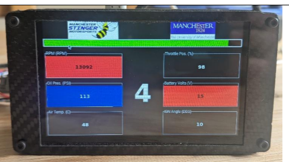
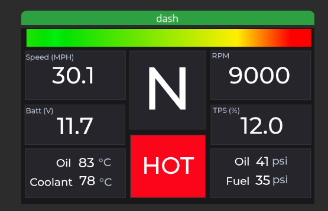
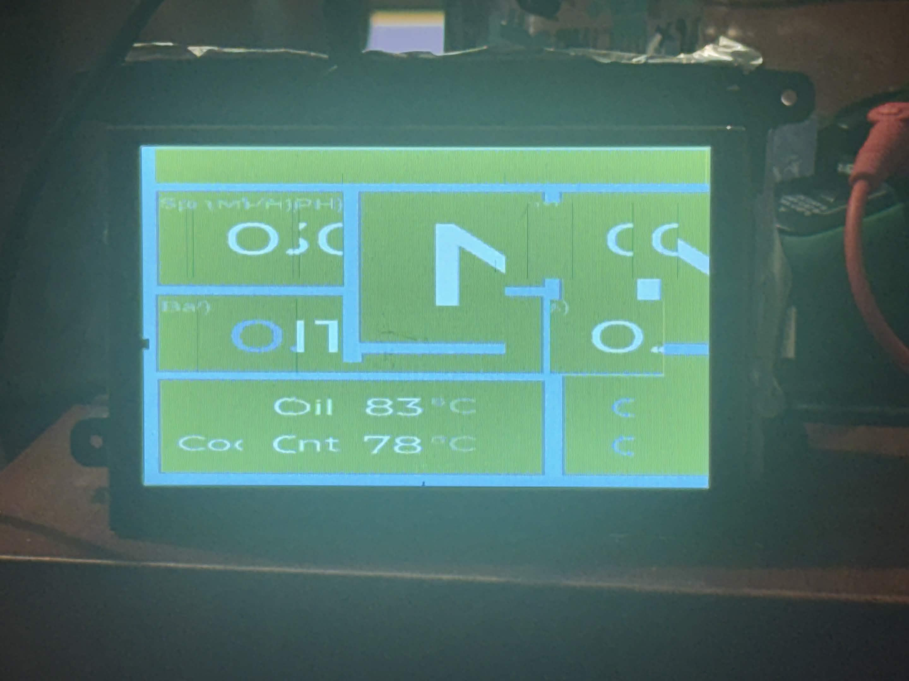
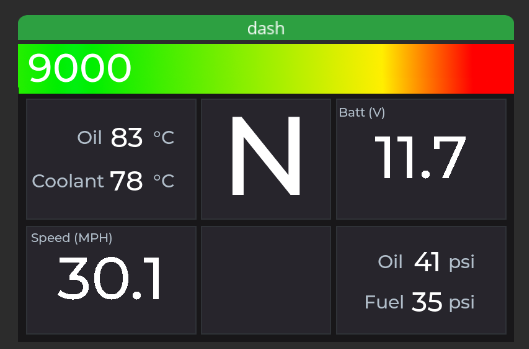
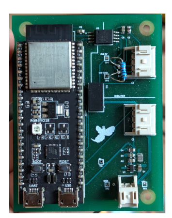
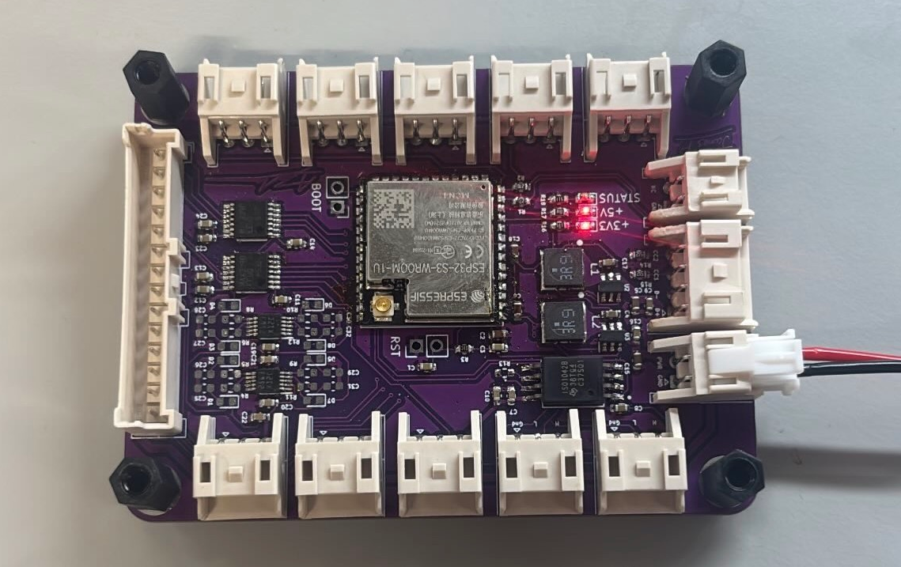

Integration Is Beyond Scope
Published
Turning finished dissertations into finished engineering.
At the time of writing, I’ve just submitted my “bespoke project proposal” for my third-year dissertation. I’m not going to discuss the content of my own dissertation here. Instead, it will be documented, hopefully in detail, in subsequent articles and, of course, in the thesis itself.
At the University of Manchester, unlike on some other university courses, a bespoke dissertation is the only way to earn module credit for Formula Student work. If you’ve spent the better part of the previous two years pouring everything you have into FS, it seems like the obvious choice. And it is—which is why it’s what I’m doing. However, one gripe I have is that, in my experience, a good dissertation is rarely conducive to a good car part. My hypothesised explanation for this is as follows:
- If you don’t get marks for integration hell, why go through it? Connecting a project to the rest of the car can, and regularly does, consume weeks of time without adding anything particularly measurable to the dissertation itself.
- Dissertations are almost always rushed at the end. Unfortunately, the end is also when the project is finally assembled, tested and refined, so fit and finish are often among the first things to be sacrificed.
- A dissertation is an individual project, whereas for a car part to be successful there must be a collaborative element.
- Academic and competition timelines do not align. For a part to perform reliably, it must be completed sufficiently in advance of competition in order to allow for rigorous testing with the car’s existing systems.
- After the final dissertation slog, motivation to continue working on the project can disappear. This is particularly likely to happen when the remaining work is the comparatively boring job of wiring and integration.
Two pieces of work from my tenure as Electronics Subteam Lead demonstrate this gap. The first was remapping the driver dashboard. The existing dissertation could decode live CAN data and display it, but it lacked an interface that was readable and easy to update around changing driver preferences. The second was developing the Johnson Node. Its dissertation had established the concept and provided a preliminary design, but the next step was designing a flexible CAN sensor node that could be adapted for use with additional peripherals. The two parts that follow describe how I took these finished (and high-scoring!) dissertations and addressed their remaining problems. Please do not read this as criticism of their original work: both dissertations were impressive pieces of engineering.
Part 1: The Driver Dashboard
The first of these projects was a digital driver dashboard developed by Michael Fahey for his dissertation. The original implementation is on Manchester Stinger Motorsports’ GitHub, alongside my later rework. Mike’s project was a fully functioning C++ application that received live SocketCAN traffic and presented it through a GTK/Glade interface. It had, prior to submission, been tested with the engine and ECU.

The foundations for a pretty professional piece of kit were already in place. The dashboard was able to receive and decode the car’s CAN packets and display the information that we wanted. The interface left something to be desired, however. It was not readable when wearing a helmet and, more importantly, was very difficult to change unless you knew the codebase back to front.
The approach I ended up choosing was to keep the existing CAN and data-field code but replace the GTK/Glade display code with LVGL and SquareLine Studio—cheers to Oliver Hiorns for recommending SquareLine. It is to Mike’s credit that the original program was modular enough for me to cut out the existing UI and replace it with a completely new UI stack without really having to disturb any of the underlying CAN decoding software. It made my life quite a lot easier.
In the state that Mike left his dissertation, a relatively small adjustment to the styling or position of a box meant working through Glade’s container hierarchy and GTK’s styling. This friction meant that no non-technical user could update the UI, and even competent members in the electronics subteam would probably not be equipped with the skills or gumption required to update the dash in a reasonable timeframe. The Glade file contained twelve generically named value labels which the application assigned data to by using their positions in a vector. This mapping is displayed below. It makes visual iteration and nice-looking UI design difficult.
value_layout_map = {
{Value00, 2}, {Value01, 5}, {Value02, 0}, {Value03, 6},
{Value10, 1}, {Value11, 7}, {Value12, 9}, {Value13, 8},
{Value20, 3}, {Value21, 4}, {Value22, 10}, {Value23, 13}
};
gear_index = 12;
rpm_index = 0;
A well-designed dashboard is not a static interface. Each driver has disagreements about which values should have most space and where they should be placed. It is also worth noting that the team intends to reuse this dash for next year's EV entry, which has completely different data points to display. If someone had to trawl through poorly commented C++ code to do this, it probably wouldn’t happen at all.
I began by cutting out the old GTK display layer which left just the data acquisition (CAN) code in place. The first LVGL commit then restored the display path. SquareLine was used to construct the interface visually and generate the LVGL objects. A (surprisingly) small amount of handwritten C++ was then used to pipe those objects to the existing shared data.
My first attempt at the UI design is shown below:

Another advantage of LVGL was that it allowed development to be separated from deployment. On a laptop, the interface is rendered in an SDL window whereas on the Raspberry Pi, inside the actual dashboard, we could write directly to the Linux framebuffer. The UI was agnostic to the display it was driving; the appropriate flush function was selected at compile time.
#ifdef UI_BACKEND_SDL
sdl_init();
display_driver.flush_cb = sdl_display_flush;
#endif
#ifdef UI_BACKEND_FBDEV
fbdev_init();
display_driver.flush_cb = fbdev_flush;
#endif
My first implementation of LVGL was not perfect by any means. It also inherited a weakness from Mike's interface; it still addressed each field by its numerical position. Later I replaced this system with a lookup keyed by the titles already carried in the data fields. Hash maps do, in fact, occasionally exist outside technical interviews and LeetCode.
using FieldMap = std::unordered_map<std::string,
std::shared_ptr<DataField>>;
FieldMap map_fields(const std::vector<std::shared_ptr<DataField>>& points){
FieldMap fields;
for(const auto& point : points){
if(point != nullptr){
fields[point->title] = point;
}
}
return fields;
}
update_field(fields, RPM_FIELD, ui_RPMVAL, 0);
update_field(fields, SPEED_FIELD, ui_SPEEDMPH, 1);
update_field(fields, BATTERY_FIELD, ui_BATTVOLTAGE, 1);
This allowed new fields to be inserted without moving every subsequent value to the wrong place on the screen.
In my new system, warning flags were also treated separately from ordinary data points. Mike's version applied generic over- and under-limit conditions to each displayed value, which made the screen (in my opinion) visually noisy. It also had the effect of giving relatively unimportant faults the same visual weight as a genuinely race-ending fault. The final behaviour I implemented had separate amber and red thresholds for oil and coolant temperature. If a red threshold was crossed, it produced a large red HOT state. This "warning box" was also shared by the launch control state, which was green when active. The temperature warning, naturally, took priority if both were present (although I would be surprised if that ever happened):
bool temp_red = is_temperature_red(fields, COOLANT_TEMP_FIELD, COOLANT_TEMP_RED_MIN)
|| is_temperature_red(fields, OIL_TEMP_FIELD, OIL_TEMP_RED_MIN);
bool launch_control = is_active(fields, LAUNCH_CONTROL_FIELD);
if (temp_red) {
lv_obj_add_state(ui_MESSAGEPANEL, LV_STATE_USER_1);
} else if (launch_control) {
lv_obj_add_state(ui_MESSAGEPANEL, LV_STATE_USER_2);
}
At that point the interface worked, but only when launched manually in a development environment. The result when launched on the actual Raspberry Pi was ...... not great.

The corruption above was caused by a pixel-format mismatch rather than any underlying logic fault, thankfully. The Raspberry Pi used a 16-bit RGB565 framebuffer, whereas the LVGL configuration was set up for 32-bit colour. The framebuffer driver was therefore copying pixels in a different byte format, producing the green-blue, washed-out and frankly mangled result.
Fixing it was actually trivial once the issue was identified. All I had to do was set LVGL to 16-bit colour with byte swapping disabled and convert the SquareLine image arrays from four bytes per pixel to the three-byte RGB565-plus-alpha representation used by LVGL at that colour depth.
#define LV_COLOR_DEPTH 16
#define LV_COLOR_16_SWAP 0
#if LV_COLOR_DEPTH != 16
#error "LV_COLOR_DEPTH should be 16bit to match the Raspberry Pi framebuffer"
#endif
Any remaining changes were made in response to driver feedback. Changes predominantly included minor UI tweaks such as:
- Unnecessary fields being removed
- Temperature thresholds being separated for oil and coolant
- The RPM bar was corrected to the engine’s 12,500 rpm range
- Sizes and positions of the primary values were revised for improved readability.
These changes took around 15 minutes and didn't require touching a single line of code. The revised interface was then deployed to the dashboard over Wi-Fi (via SSH) in fewer than five commands.

The result was a dashboard that could be installed on the car, adjusted around driver feedback and updated without unpicking any of the software beneath it. Mike’s original application continued to handle the task of receiving and decoding the car’s data, with my contributions making that data actually useful to the drivers.
Part 2: The Johnson Node
Repository: Manchester Stinger Motorsports — Johnson Node
The second project originated from Alexander Johnson's dissertation: "Design and Implementation of an Analogue to Digital CAN Module for a Formula Student Vehicle." Alex successfully designed a PCB which took data from high-impedance analogue sensors, converted it using a 12-bit ADC and output it onto the car's CAN bus so that it could be logged. It included local power regulation and a fully electrically isolated CAN bus interface.

By the time the prototype was complete, the project had already gone through substantial iteration. Like Mike’s dashboard, it was certainly more than a proof of concept, but it was still lacking a few things before I would have been comfortable putting it on the car:
- Only one ADC channel had been tested, so the prototype required further testing.
- Fit and finish were lacking.
- There had been no testing with the car’s actual systems, including the other CAN nodes.
The proposed future work section in the dissertation actually identified most of the next steps towards solving these problems. These included testing all eight ADC channels, replacing the development board with a WROOM module, and adding separate interface boards for sensor types such as strain gauges.
Another issue I wanted to tackle was that of repetition. A single CAN sensor node on the car is useful, sure, but sensors on the car are distributed somewhat sporadically. I wanted to identify the common features of, say, a board that could interface with strain gauges and one that could handle GPS data, and use them to create the highest common factor of any CAN-enabled node on the car that required computing power. The specialised bits could then sit on top as smaller, less technically complex additions, much like Arduino shields or Raspberry Pi HATs in their respective ecosystems.
The resulting base board was to have the following specifications.
- An ESP32-S3 WROOM module rather than the unwieldy development board.
- Eight 12-bit analogue inputs.
- A CAN transceiver and my MSM_CAN software stack.
- Onboard power regulation.
- A 14-pin connector exposing power and a substantial proportion of the ESP32’s remaining IO.

For ordinary high-impedance sensors, the base node's ADCs were sufficiently good on their own. For other devices, such as the GPS and IMU carrier, additional signals including UART, pulse-per-second and I²C were routed through the multipin connector. This allowed position and inertial data to use the same CAN interface as the analogue channels.
Reusing the hardware was a good first step. It reduced the chance of the team wasting money reinventing features that we know we already have the hardware for. However, we stood to gain just as much by developing the firmware in a similar way. Alex built his original firmware on my MSM_CAN library, which handled much of the lower-level work of configuring the ESP32’s CAN controller and transmitting messages safely onto the bus (or about as safely as anything can be done in C++ hah). This saved him a substantial amount of development time: the roughly 500 lines of code required to get the CAN controller functioning were hidden behind an API of fewer than five methods, allowing him to concentrate on the module’s hardware instead.
At my suggestion, Alex’s firmware separated ADC sampling and CAN transmission into concurrent FreeRTOS tasks, with a mutex protecting the sensor value—the only data point shared between them. The later software extended the same basic idea to several sensor types. A central BoardConfig file held the pin assignments, bus speeds and sample rates, while the ESP32 created independent tasks for ADC sampling, the IMU, the GPS receiver and CAN transmission at startup:
const TaskDefinition tasks[] = {
{CAN_task, "CAN_task", 5'120, tskIDLE_PRIORITY + 3},
{ADC_task, "ADC_task", 4'096, tskIDLE_PRIORITY + 2},
{IMU_task, "IMU_task", 4'096, tskIDLE_PRIORITY + 2},
{GPS_task, "GPS_task", 4'096, tskIDLE_PRIORITY + 2},
};
Sensor tasks do not transmit any CAN messages directly. Instead, they each own a FreeRTOS queue into which they dump their samples. A separate, higher-priority CAN task reads from those queues and encodes any/all samples for transmission using MSM_CAN. This separation is helpful for a few reasons. Firstly, it prevents a busy CAN bus from delaying sensor readings, as there is a degree of separation between the readings and CAN timing. Secondly, since the tasks are compatible with each other, as long as a task has been written for an existing sensor, a new team member can compose a new Johnson Node with a mix of sensors with minimal hardware design (only a new HAT) and virtually no new code.
I also assigned CAN IDs to every output type with future expansion in mind. Rather than using whichever identifier happened to be free, each sensor type was given its own contiguous range, with plenty of extra space reserved for future expansion. This meant that new sensors could be added without having to reflash any other nodes. All of this was tracked in one master .dbc file.
In summary, at the point that Alex left it, his node was not at the stage where it could be implemented as the backbone of all data logging in the car. While much of my work only involved resolving small implementation details, I took a prototype node and used it to create the blueprint of a fully modular hardware/software ecosystem (wow, what a buzzword).
And on that bombshell, that brings this post to a close. Thanks for reading.